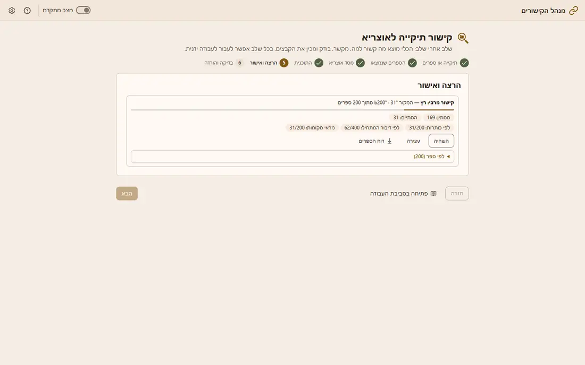
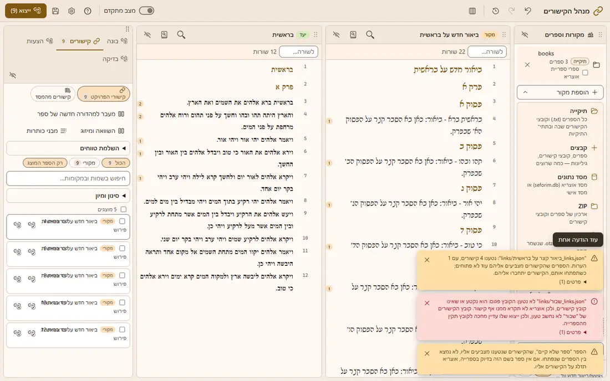
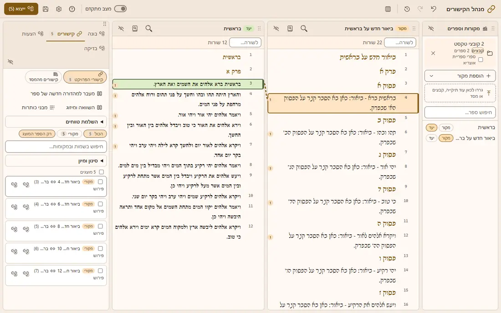
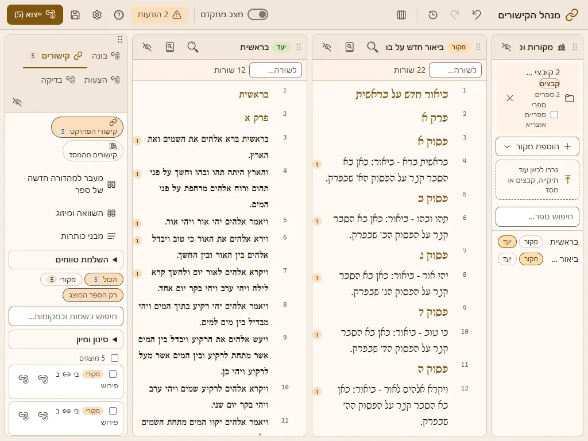

חלופות עיצוב — ביקורת V5
שבעה מסכים שהביקורת מצאה בהם בעיה של פריסה, צפיפות או הצגה, שאין לה תיקון אחד ברור. לכל מסך: מה נמצא, איך זה נראה עכשיו, ושתיים־שלוש חלופות. כל תמונה היא הכלי הבנוי עצמו, באותו מצב; חלופה היא אותו כלי עם כמה כללי CSS שהוזרקו — עוד לא בקוד. מה שכבר תוקן בלי צורך בהחלטה מסומן במסגרת ירוקה ("הוחל"). הממצאים המלאים: docs/reviews/UX_AUDIT_V5.md. ההחלטות של ADR 0005 (ארבעה טורים כברירת מחדל, תבניות, חום במצב כהה) נשמרות בכל החלופות.
1. סביבת העבודה בחלון של 1024×768
פתיחה ראשונה בחלון צר מ־1200 כבר מתחילה בתבנית "שני טקסטים וחלונית צד". אבל חלון שהוקטן אחרי הפתיחה (או פריסה שנשמרה במחשב גדול) נשאר בארבעה טורים: מקורות 150px, החלונית 210px — שמות הספרים נחתכים לאות אחת ("ב… ⇔ ב…"), טבלת ההצעות גולשת הצידה (+37px), וכפתור הדחייה נעלם מחוץ לחלונית.


- התבנית כבר קיימת ונבדקה; רק מחילים אותה גם כשהחלון קטן מ־1200 תוך כדי עבודה
- הספרים עוברים ללשונית "ספרים" בחלונית
- משנה פריסה בלי שהמשתמש ביקש — לכן רק אם לא בחר תבנית בעצמו בהפעלה הזו

- נשארים ארבעה טורים (ADR 0005 §2); החלונית מקבלת 300px
- לחיצה על סמל פותחת את רשימת הספרים מעל הקורא
- רכיב חדש (פס ופאנל צף) — יותר עבודה מחלופה א
המלצה: א (זול, עקבי עם מה שקורה בפתיחה), ואפשר ב בהמשך גם למסכים גדולים.
2. ההצעות אחרי קישור מרבי
אחרי קישור מרבי, לפני ההצעה הראשונה יש ארבעה סיכומים: שורת הכותרת (2,000 הצעות · 2,000 ממתינות), הערה על איחוד ("4,000 הצעות מ־800 שלבים אוחדו…"), כרטיס העבודה (הסתיים · לפי שיטה · כפתורים) ודוח הקישור המרבי הפתוח (12 מונים, לפי ספר, לפי שיטה). ב־1440 טבלת ההצעות מתחילה מתחת לקו המסך; ב־820 החלונית התחתונה מלאה בסיכומים.


- הטבלה עולה לראש החלונית; המספרים החשובים נשארים בכותרת
- כרטיס העבודה חוזר לבד כשיש מה להמשיך (מושהה, נכשלו)
- הדוח המפורט רחוק בלחיצה אחת

- עמודות "אל" ו"ודאות" בלי שבירת שורות; פחות גלילה
- הקוראים מצטמצמים בזמן הסקירה; צריך כלל ברור מתי חוזרים
המלצה: א. ב — רק אם בבדיקה עם משתמשים יתברר שסוקרים הרבה בטבלה ולא בכרטיס.
3. שורות טבלת הקישורים
כל קישור הוא שורה אחת של 60px. הוחל: השמות כבר לא נכתבים זה על זה, ומספר השורה לא נחתך (היה "ביאור חדש על בראשיתאאשית4…"). אבל בחלונית של 300px עדיין נשאר "ביאור חד… 4 ⇔ בר… (3)", ושורת "פירוש" שמתחת כמעט ריקה.


- שני השמות כמעט מלאים באותו גובה שורה (64px)
- הסוג והשיטה עוברים לרמז (title) או לסינון

- "ביאור חדש על בראשית 4 ⇔ בראשית א, א (3)" בשורה אחת
- אותו מחיר כמו 2ב: הקוראים צרים יותר בזמן עבודה על הטבלה
המלצה: א.
4. ההרצה בזרימה המודרכת
בזמן קישור מרבי בזרימה המודרכת יש שלושה פסי התקדמות לאותה עבודה: בסרגל העליון (עם "ביטול"), בכרטיס השלב ("ספר 17 מתוך 200") ובכרטיס העבודה שבתוכו ("מתוך 200 ספרים", עם "השהיה" ו"עצירה"). "ביטול" ו"עצירה" עושים אותו דבר בשתי מילים.


- פס אחד, מילה אחת לעצירה ("עצירה"), וההשהיה במקומה
- הזמן הנותר (שיש היום בכרטיס השלב) צריך לעבור לכרטיס העבודה

- הכי פשוט למי שלא קרא את המדריך
- מי שרוצה לראות התקדמות לפי שיטה צריך לפתוח "פרטים"
המלצה: ב בזרימה המודרכת; בסביבת העבודה כרטיס העבודה נשאר כמו שהוא.
5. איזו שורה במקור הולכת עם איזו שורה ביעד
לחיצה על קישור בטבלה (או בבדיקה, או ב"לא ייוצאו, ולמה") גוללת לשני צדדיו ומהבהבת שנייה אחת — ואז שום דבר על המסך לא אומר מה הולך עם מה. הוחל: שני הצדדים נשארים מסומנים בצבעי המקור והיעד, כמו בהצעה. מה שעוד חסר: מהטקסט עצמו אין דרך להגיע מהשורה לקישורים שלה — המספרים שליד השורה ("1", "2") לא לחיצים.



- מהטקסט לקישור בלחיצה אחת, עם תחילת שורת היעד
- לחיצה על קישור ברשימה = מעבר ושני הצדדים מסומנים
- רכיב צף חדש; צריך גישה מהמקלדת

- רואים את הקשר בלי לקרוא מספרים
- הקו נשבר כשאחד הקוראים גולל או כשהפאנלים בסדר אחר (תבניות, גרירה)
המלצה: א (ב יפה, אבל שביר מול פריסה גמישה).
6. ההודעות
עד שלוש הודעות בפינה, 440px, עד 6 שורות כל אחת. אחרי פתיחת תיקיית קישורים וספרים הן מכסות את רשימת הספרים ואת תחתית הקורא; שגיאה נשארת עד שסוגרים. בזרימה המודרכת הן כיסו את "חזרה" — הוחל: שם הן עולות מעל הכפתורים.


- מכסה גובה של שורה אחת
- הודעה ארוכה נקראת רק בפתיחה (לחיצה או ריחוף)

- שום דבר לא מכסה את הטקסט בזמן עבודה
- "נפתחו 200 ספרים" לא נראה מעצמו — אישור שמשתמשים מצפים לו
המלצה: א.
7. הסרגל העליון בחלון של 820 (טאבלט לאורך)
ב־820 הסרגל נכנס בשורה אחת — עד שמופיע "חזרה להדרכה" (או משימה רצה): אז "ייצוא" יורד לשורה שנייה לבד, והסרגל תופס 100px.


- שינוי של שורת CSS; כבר כך מתחת ל־600px
- פחות מקום מפנה מ־ב

- מקום ל"חזרה להדרכה" ולמשימה הרצה
- ביטול בשתי לחיצות (Ctrl+Z נשאר)
המלצה: א.